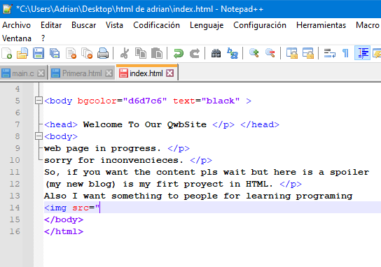

welcome to my new qwbsite, it is all about the new design. btw this is on beta, the spanish version wouldn't recieve more updates.  this new qwbsite uses 80% html 20% CSS 0%JavaScript Is this great? also i used like 50 tables for this.